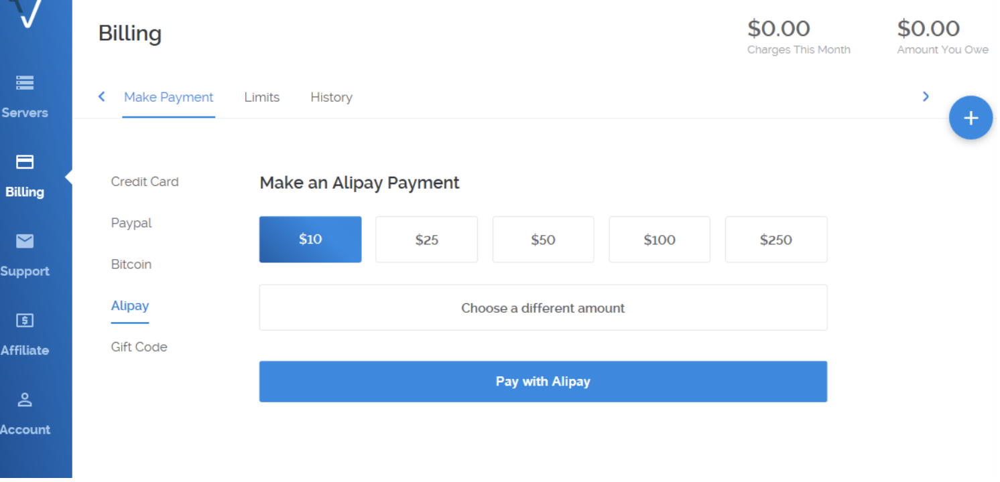
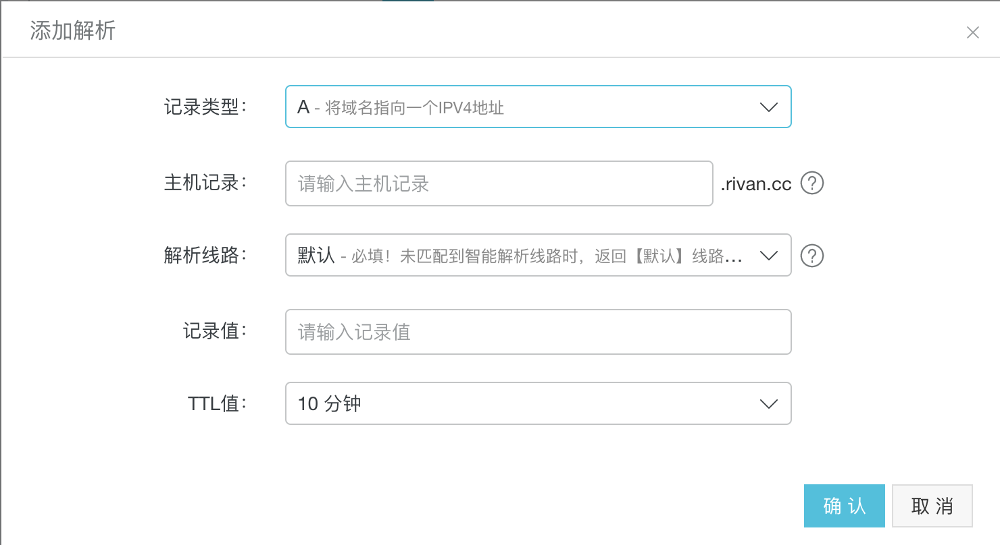

<!DOCTYPE html>
<html lang="en">

<!-- Head tag -->
<head>
    <meta charset="utf-8">
    <meta http-equiv="X-UA-Compatible" content="IE=edge">
    <meta name="viewport" content="width=device-width, initial-scale=1">
    <meta name="description" content="雷雯的个人博客">
    <meta name="keyword" content="">
    <meta name="theme-color" content="#600090">
    <meta name="msapplication-navbutton-color" content="#600090">
    <meta name="apple-mobile-web-app-capable" content="yes">
    <meta name="apple-mobile-web-app-status-bar-style" content="#600090">
    <link rel="shortcut icon" href="https://cdn4.iconfinder.com/data/icons/ionicons/512/icon-person-128.png">
    <link rel="alternate" type="application/atom+xml" title="Riven" href="/atom.xml">
    <link rel="stylesheet" href="//cdnjs.cloudflare.com/ajax/libs/animate.css/3.5.2/animate.min.css">
    <link rel="stylesheet" href="//cdn.bootcss.com/font-awesome/4.6.3/css/font-awesome.css">
    <title>
        
        how to build a personal site｜Riven
        
    </title>

    <link rel="canonical" href="http://rivan.cc/2017/12/19/how-to-build-a-personal-site/">

    <!-- Bootstrap Core CSS -->
    <link rel="stylesheet" href="/css/bootstrap.min.css">

    <!-- Custom CSS -->
    <link rel="stylesheet" href="/css/blog-style.css">

    <!-- Pygments Github CSS -->
    <link rel="stylesheet" href="/css/syntax.css">
</head>

<style>

    header.intro-header {
        background-image: url('')
    }
</style>
<!-- hack iOS CSS :active style -->
<body ontouchstart="" class="animated fadeIn">
<!-- Navigation -->
<nav class="navbar navbar-default navbar-custom navbar-fixed-top " id="nav-top" data-ispost = "true" data-istags="false
" data-ishome = "false" >
    <div class="container-fluid">
        <!-- Brand and toggle get grouped for better mobile display -->
        <div class="navbar-header page-scroll">
            <button type="button" class="navbar-toggle">
                <span class="sr-only">Toggle navigation</span>
                <span class="icon-bar"></span>
                <span class="icon-bar"></span>
                <span class="icon-bar"></span>
            </button>
            <a class="navbar-brand animated pulse" href="/">
                <span class="brand-logo">
                    Riven
                </span>
                's Blog
            </a>
        </div>

        <!-- Collect the nav links, forms, and other content for toggling -->
        <!-- Known Issue, found by Hux:
            <nav>'s height woule be hold on by its content.
            so, when navbar scale out, the <nav> will cover tags.
            also mask any touch event of tags, unfortunately.
        -->
        <!-- /.navbar-collapse -->
        <div id="huxblog_navbar">
            <div class="navbar-collapse">
                <ul class="nav navbar-nav navbar-right">
                    <li>
                        <a href="/">Home</a>
                    </li>
					
                    
                        
							
                        <li>
                            <a href="/Works/">Works</a>
                        </li>
							
						
                    
                        
							
                        <li>
                            <a href="/Tags/">Tags</a>
                        </li>
							
						
                    
					
					
                </ul>
            </div>
        </div>
    </div>
    <!-- /.container -->
</nav>
<script>
    // Drop Bootstarp low-performance Navbar
    // Use customize navbar with high-quality material design animation
    // in high-perf jank-free CSS3 implementation
//    var $body   = document.body;
    var $toggle = document.querySelector('.navbar-toggle');
    var $navbar = document.querySelector('#huxblog_navbar');
    var $collapse = document.querySelector('.navbar-collapse');

    $toggle.addEventListener('click', handleMagic)
    function handleMagic(e){
        if ($navbar.className.indexOf('in') > 0) {
        // CLOSE
            $navbar.className = " ";
            // wait until animation end.
            setTimeout(function(){
                // prevent frequently toggle
                if($navbar.className.indexOf('in') < 0) {
                    $collapse.style.height = "0px"
                }
            },400)
        }else{
        // OPEN
            $collapse.style.height = "auto"
            $navbar.className += " in";
        }
    }
</script>

<!-- Main Content -->

<!--only post-->


<style>
    
    header.intro-header {
        background-image: url('https://timgsa.baidu.com/timg?image&quality=80&size=b9999_10000&sec=1513836706766&di=187ce387fb73c20a1eb0f1b19beb7105&imgtype=0&src=http%3A%2F%2Fimgsrc.baidu.com%2Fimgad%2Fpic%2Fitem%2Fd1160924ab18972b4c2e08ededcd7b899e510a84.jpg');
        /* background-image: url('https://timgsa.baidu.com/timg?image&amp;quality=80&amp;size=b9999_10000&amp;sec=1513836706770&amp;di=b6f12303a4e27ba2664b05bdb7721f7e&amp;imgtype=0&amp;src=http%3A%2F%2Ft1.niutuku.com%2F960%2F28%2F28-320663.jpg'); */
    }

    
</style>

<header class="intro-header">
    <div class="container">
        <div class="row">
            <div class="col-lg-8 col-lg-offset-2 col-md-10 col-md-offset-1 text-center">
                <div class="post-heading">
                    <h1>how to build a personal site</h1>
                    
                    <h2 class="subheading">搭建个人站点</h2>
                    
                    <span class="meta">
                         作者 Wen Lei
                        <span>
                          日期 2017-12-19
                         </span>
                    </span>
                    <div class="tags text-center">
                        
                        <a class="tag" href="/tags/#build a personal site"
                           title="build a personal site">build a personal site</a>
                        
                        <a class="tag" href="/tags/#nginx"
                           title="nginx">nginx</a>
                        
                        <a class="tag" href="/tags/#vultr"
                           title="vultr">vultr</a>
                        
                    </div>
                </div>
            </div>
        </div>
    </div>
    <div class="post-title-haojen">
        <span>
            how to build a personal site
        </span>
    </div>
</header>

<!-- Post Content -->
<article>
    <div class="container">
        <div class="row">
            <!-- Post Container -->
            <div class="col-lg-8 col-lg-offset-1 col-sm-9 post-container">
                <p>为了纪念一下这个自己开始写博客了，决定先写一篇博客来记录一下这个博客是如何从0开始的。<br></p>
<h2 id="STEP1-准备服务器和域名"><a href="#STEP1-准备服务器和域名" class="headerlink" title="STEP1:准备服务器和域名"></a>STEP1:准备服务器和域名</h2><ul>
<li>关于域名：不多说，自己上万网上去买就好了，需要实名认证的记得买好3-5天内进行实名认证。</li>
<li>关于服务器：自己选，国内有阿里云、腾讯云，国外有<a href="https://www.vultr.com/?ref=7288455" target="_blank" rel="noopener">vultr</a>。我选用了<a href="https://www.vultr.com/?ref=7288455" target="_blank" rel="noopener">vultr</a>。其中一个原因是最近它支持了支付宝。<blockquote>
<p>具体步骤如下：</p>
<ol>
<li>注册<a href="https://www.vultr.com/?ref=7288455" target="_blank" rel="noopener">vultr</a></li>
<li>点击Billing进行充值，建议选用Alipay(支付宝)，扫码支付很方便。<br> </li>
<li>服务器创建：点击右上角的如图所示按钮  Deploy New Server–&gt;选择Server Location、Server Type、Server Size–&gt;Deploy Now<br><br><br></li>
<li>进入左侧 Servers ，稍等1分钟服务器信息就生成了。<br>用户点击服务器状态右边的“…”，从下拉菜单中可以看到这些命令：<br> “Server Details” 服务器详细信息；<br> “View Console” 控制台；<br> “Server Stop” 关机；<br> “Server Restart” 重启；<br> “Server Reinstall” 重装系统；<br> “Server Destroy” 销毁服务器。</li>
</ol>
</blockquote>
</li>
</ul>
<blockquote>
<p>tips:</p>
<ol>
<li>关于站点：我一开始选了日本，然后View Console一直没有反应，后来咨询客服，客服说日本站点有问题，我又换成新加坡，之后就好了</li>
<li>vultr SSH默认端口号是22  </li>
<li>单击服务器名或Cloud Instance 也可以进入VPS控制面板管理<ul>
<li>IP Address 服务器IP</li>
<li>Username ssh用户名</li>
<li>Password ssh密码</li>
</ul>
</li>
</ol>
</blockquote>
<h2 id="STEP2-搭建个人博客"><a href="#STEP2-搭建个人博客" class="headerlink" title="STEP2:搭建个人博客"></a>STEP2:搭建个人博客</h2><p>我选用了<a href="https://hexo.io/zh-cn/docs/" target="_blank" rel="noopener">hexo</a>来做博客，它有丰富主题，而且有插件支持博客自动化部署到服务器，相当方便。具体步骤就按照官网文档走就行，有中文文档，我就不啰嗦了。切换主题见我博客<a href="">hexo如何切换主题</a></p>
<h2 id="STEP3-博客发到服务器"><a href="#STEP3-博客发到服务器" class="headerlink" title="STEP3:博客发到服务器"></a>STEP3:博客发到服务器</h2><p>这部分其实<a href="https://hexo.io/zh-cn/docs/" target="_blank" rel="noopener">hexo</a>的部署部分有详细介绍，在这里我就只补充说明两点：</p>
<ol>
<li>如果选择git发到GitHub，记得在GitHub的Setting里面设置SSH或者在项目的Settings里面设置Deploy keys，二选一即可，不可同时设置。两者的区别见我的另一篇博客<a href="http://blog.rivan.cc/2017/12/21/ssh%E5%92%8Cdeploy-key%E5%8C%BA%E5%88%AB/" target="_blank" rel="noopener">ssh-和 deploy key 区别</a></li>
<li>如果选择rsync发到VPS，不要去改deploy里面的port，这个port要保持和VPS的22一致！不然会发不上去。</li>
</ol>
<h2 id="STEP4-域名解析和Nginx代理"><a href="#STEP4-域名解析和Nginx代理" class="headerlink" title="STEP4:域名解析和Nginx代理"></a>STEP4:域名解析和Nginx代理</h2><ul>
<li><p>关于域名解析：</p>
<p>  <br><br>  如上图所示：记录类型选A，记录值填入VPS的IP Address，主机记录是域名前缀，我设置的是blog</p>
</li>
<li><p>Nginx代理</p>
<ol>
<li>首先安装Nginx</li>
<li><p>修改Nginx配置(server_name、root、index），如下</p>
<figure class="highlight plain"><table><tr><td class="gutter"><pre><span class="line">1</span><br><span class="line">2</span><br></pre></td><td class="code"><pre><span class="line">cd /etc/nginx/</span><br><span class="line">vi nginx.conf</span><br></pre></td></tr></table></figure>
<figure class="highlight plain"><table><tr><td class="gutter"><pre><span class="line">1</span><br><span class="line">2</span><br><span class="line">3</span><br><span class="line">4</span><br><span class="line">5</span><br><span class="line">6</span><br><span class="line">7</span><br><span class="line">8</span><br><span class="line">9</span><br><span class="line">10</span><br><span class="line">11</span><br><span class="line">12</span><br><span class="line">13</span><br><span class="line">14</span><br><span class="line">15</span><br><span class="line">16</span><br><span class="line">17</span><br><span class="line">18</span><br><span class="line">19</span><br><span class="line">20</span><br><span class="line">21</span><br><span class="line">22</span><br></pre></td><td class="code"><pre><span class="line">server &#123;</span><br><span class="line">    listen       80 default_server;</span><br><span class="line">    listen       [::]:80 default_server;</span><br><span class="line">    server_name  这里填上域名如，blog.rivan.cc;</span><br><span class="line">    root         这里填上你在hexo的_config.yml的deploy的root所填写的路径;</span><br><span class="line"></span><br><span class="line">    index	     index.html</span><br><span class="line"></span><br><span class="line">    # Load configuration files for the default server block.</span><br><span class="line">    include /etc/nginx/default.d/*.conf;</span><br><span class="line"></span><br><span class="line">    location / &#123;</span><br><span class="line">    &#125;</span><br><span class="line"></span><br><span class="line">    error_page 404 /404.html;</span><br><span class="line">        location = /40x.html &#123;</span><br><span class="line">    &#125;</span><br><span class="line"></span><br><span class="line">    error_page 500 502 503 504 /50x.html;</span><br><span class="line">        location = /50x.html &#123;</span><br><span class="line">    &#125;</span><br><span class="line">&#125;</span><br></pre></td></tr></table></figure>
<p>3、重启Nginx,如果没有启动过，则直接启动Nginx就好</p>
<figure class="highlight plain"><table><tr><td class="gutter"><pre><span class="line">1</span><br><span class="line">2</span><br></pre></td><td class="code"><pre><span class="line">nginx -s reload #重启</span><br><span class="line">nginx #启动</span><br></pre></td></tr></table></figure>
<p>4、防火墙设置</p>
<figure class="highlight plain"><table><tr><td class="gutter"><pre><span class="line">1</span><br><span class="line">2</span><br></pre></td><td class="code"><pre><span class="line">// 开启80端口</span><br><span class="line">firewall-cmd --add-port=80/tcp</span><br></pre></td></tr></table></figure>
<p>查询的命令是</p>
<figure class="highlight plain"><table><tr><td class="gutter"><pre><span class="line">1</span><br><span class="line">2</span><br></pre></td><td class="code"><pre><span class="line">// 查询是否开启80端口—Nginx的端口</span><br><span class="line">firewall-cmd --query-port=80/tcp</span><br></pre></td></tr></table></figure>
</li>
</ol>
</li>
</ul>

                <hr>
                

                <ul class="pager">
                    
                    <li class="previous">
                        <a href="/2017/12/21/ssh和deploy-key区别/" data-toggle="tooltip" data-placement="top"
                           title="ssh_key和deploy_key区别">&larr; Previous Post</a>
                    </li>
                    
                    
                </ul>

                

                


                <!--加入新的评论系统-->
                
                <!-- 来必力City版安装代码 -->
                <div id="lv-container" data-id="city" data-uid="MTAyMC8zMjYxMC85MTcx">
                    <script type="text/javascript">
                        (function(d, s) {
                            var j, e = d.getElementsByTagName(s)[0];

                            if (typeof LivereTower === 'function') { return; }

                            j = d.createElement(s);
                            j.src = 'https://cdn-city.livere.com/js/embed.dist.js';
                            j.async = true;

                            e.parentNode.insertBefore(j, e);
                        })(document, 'script');
                    </script>
                    <noscript> 为正常使用来必力评论功能请激活JavaScript</noscript>
                </div>
                <!-- City版安装代码已完成 -->
                
            </div>

            <div class="hidden-xs col-sm-3 toc-col">
                <div class="toc-wrap">
                    <ol class="toc"><li class="toc-item toc-level-2"><a class="toc-link" href="#STEP1-准备服务器和域名"><span class="toc-text"><a href="#STEP1-&#x51C6;&#x5907;&#x670D;&#x52A1;&#x5668;&#x548C;&#x57DF;&#x540D;" class="headerlink" title="STEP1:&#x51C6;&#x5907;&#x670D;&#x52A1;&#x5668;&#x548C;&#x57DF;&#x540D;"></a>STEP1:&#x51C6;&#x5907;&#x670D;&#x52A1;&#x5668;&#x548C;&#x57DF;&#x540D;</span></a></li><li class="toc-item toc-level-2"><a class="toc-link" href="#STEP2-搭建个人博客"><span class="toc-text"><a href="#STEP2-&#x642D;&#x5EFA;&#x4E2A;&#x4EBA;&#x535A;&#x5BA2;" class="headerlink" title="STEP2:&#x642D;&#x5EFA;&#x4E2A;&#x4EBA;&#x535A;&#x5BA2;"></a>STEP2:&#x642D;&#x5EFA;&#x4E2A;&#x4EBA;&#x535A;&#x5BA2;</span></a></li><li class="toc-item toc-level-2"><a class="toc-link" href="#STEP3-博客发到服务器"><span class="toc-text"><a href="#STEP3-&#x535A;&#x5BA2;&#x53D1;&#x5230;&#x670D;&#x52A1;&#x5668;" class="headerlink" title="STEP3:&#x535A;&#x5BA2;&#x53D1;&#x5230;&#x670D;&#x52A1;&#x5668;"></a>STEP3:&#x535A;&#x5BA2;&#x53D1;&#x5230;&#x670D;&#x52A1;&#x5668;</span></a></li><li class="toc-item toc-level-2"><a class="toc-link" href="#STEP4-域名解析和Nginx代理"><span class="toc-text"><a href="#STEP4-&#x57DF;&#x540D;&#x89E3;&#x6790;&#x548C;Nginx&#x4EE3;&#x7406;" class="headerlink" title="STEP4:&#x57DF;&#x540D;&#x89E3;&#x6790;&#x548C;Nginx&#x4EE3;&#x7406;"></a>STEP4:&#x57DF;&#x540D;&#x89E3;&#x6790;&#x548C;Nginx&#x4EE3;&#x7406;</span></a></li></ol>
                </div>
            </div>
        </div>

        <div class="row">
            <!-- Sidebar Container -->

            <div class="
                col-lg-8 col-lg-offset-2
                col-md-10 col-md-offset-1
                sidebar-container">

                <!-- Featured Tags -->
                

                <!-- Friends Blog -->
                
            </div>
        </div>

    </div>
</article>


<!-- Footer -->
<!-- Footer -->
<footer>
    <div class="container">
        <div class="row">
            <div class="col-lg-8 col-lg-offset-2 col-md-10 col-md-offset-1 text-center">
                <br>
                <ul class="list-inline text-center">
                
                
                

                
                    <li>
                        <a target="_blank" href="http://weibo.com/lw604217818">
                            <span class="fa-stack fa-lg">
                                <i class="fa fa-circle fa-stack-2x"></i>
                                <i class="fa fa-weibo fa-stack-1x fa-inverse"></i>
                            </span>
                        </a>
                    </li>
                

                

                
                    <li>
                        <a target="_blank"  href="https://github.com/lw604217818">
                            <span class="fa-stack fa-lg">
                                <i class="fa fa-circle fa-stack-2x"></i>
                                <i class="fa fa-github fa-stack-1x fa-inverse"></i>
                            </span>
                        </a>
                    </li>
                

                

                </ul>
                <p class="copyright text-muted">
                    Copyright &copy; Riven 2017
                </p>

            </div>
        </div>
    </div>
</footer>

<!-- jQuery -->
<script src="/js/jquery.min.js"></script>

<!-- Bootstrap Core JavaScript -->
<script src="/js/bootstrap.min.js"></script>

<!-- Custom Theme JavaScript -->
<script src="/js/blog.js"></script>

<!-- async load function -->
<script>
    function async(u, c) {
      var d = document, t = 'script',
          o = d.createElement(t),
          s = d.getElementsByTagName(t)[0];
      o.src = u;
      if (c) { o.addEventListener('load', function (e) { c(null, e); }, false); }
      s.parentNode.insertBefore(o, s);
    }
</script>

<!-- jquery.tagcloud.js -->
<script>
    // only load tagcloud.js in tag.html
    if($('#tag_cloud').length !== 0){
        async("http://rivan.cc/js/jquery.tagcloud.js",function(){
            $.fn.tagcloud.defaults = {
                //size: {start: 1, end: 1, unit: 'em'},
                color: {start: '#bbbbee', end: '#0085a1'},
            };
            $('#tag_cloud a').tagcloud();
        })
    }
</script>

<!--fastClick.js -->
<script>
    async("//cdn.bootcss.com/fastclick/1.0.6/fastclick.min.js", function(){
        var $nav = document.querySelector("nav");
        if($nav) FastClick.attach($nav);
    })
</script>

<!-- Google Analytics -->


<!-- Baidu Tongji -->


<!-- swiftype -->
<script type="text/javascript">
  (function(w,d,t,u,n,s,e){w['SwiftypeObject']=n;w[n]=w[n]||function(){
  (w[n].q=w[n].q||[]).push(arguments);};s=d.createElement(t);
  e=d.getElementsByTagName(t)[0];s.async=1;s.src=u;e.parentNode.insertBefore(s,e);
  })(window,document,'script','//s.swiftypecdn.com/install/v2/st.js','_st');

  _st('install','','2.0.0');
</script>

<script async src="//dn-lbstatics.qbox.me/busuanzi/2.3/busuanzi.pure.mini.js"></script>

<!--wechat title img-->

</body>

</html>
